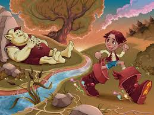

Pulgarcito
Pulgarcito era el pequeño de siete hermanos y vivía en el seno de una familia muy muy pobre. A pesar de ser el hermano menor, era el más valiente e inteligente de todos ellos. Una noche, mientras sus hermanos dormían, él escuchó a sus padres con tristeza: - No tengo trabajo, no nos queda comida, no sé como vamos a sobrevivir, se lamentaba el padre. Quizás tengamos que dejar a los niños en el bosque y, con suerte, alguien se apiadará de ellos y los recogerá. A la mañana siguiente, todos marcharon al bosque, los hermanos de Pulgarcito no sabían qué ocurriría pero él, que lo había escuchado todo, se había guardado un trozo de pan y lo fue desmenuzado discretamente en el camino. Su intención era poder encontrar el camino de vuelta cuando sus padres les abandonaran en el bosque. Cuando marcharon dejándolos solos, los hermanos de Pulgarcito se asustaron mucho, pero él, el más pequeño de todos les dijo: - No os preocupéis, podemos volver a casa siguiendo el camino de migas de pan que he dejado. Todos respiraron aliviados pero, cuando tras seguir unas pocas migajas, se dieron cuenta de que las demás habían desaparecido. - ¡Los pájaros se han comido las migas!, no podremos encontrar el camino a casa, dijo Pulgarcito ante la mirada aterrada de sus hermanos. Intentando calmarles, les sugirió que comenzaran a caminar en busca de refugio antes de que llegara la noche. Y, caminando, llegaron a una casa muy grande en medio de un claro. Al llegar una mujer muy amable les abrió la puerta y les dijo: -¿Qué estás haciendo aquí?, ¿no sabéiss que un ogro que come niños vive en esta casa? Dibujo de un ogro para colorear - Danos algo de comer, se apresuró a decir Pulgarcito, nos han abandonado en el bosque y tenmos hambre. - Bien, dijo la mujer, os ayudaré, esperemos que el ogro no regrese demasiado pronto. Entraron en la casa y la mujer les ofreció una comida de ensueño. Nunca habían visto tanta comida y absortos que estaban degustando aquellos manjares se olvidaron de la advertencia de la mujer. De repente, un enorme paso resonó por toda la casa. ¡El ogro había regresado! - ¡Huele a niños! huele a carne fresca!, gritó el ogro con una voz terrible. Mientras la buena mujer intentaba distraer del ogro, los niños saltaron por la ventana y comenzaron a correr pero el ogro pudo ver como escapaban. - ¡Niños! Reconocí el olor de inmediato... ¡no escaparéis!, chillaba el ogro. Pulgarcito y sus hermanos corrieron tanto como updieron pero el ogro, llevaba unas botas de siete leguas, unas botas mágicas que le permitían correr más rápido que nadie y dar unos saltos enormes. Con esas botas, no tendría que esforzarse, así que seguro de poder alcanzar a los niños, decidió tomar una siesta. No muy lejos de allí, escondido detrás de una roca, el pequeño Pulgarcito le dijo a sus hermanos. - Cuando duerma profundamente, nosotros tomaremos sus botas, será nuestra salvación, afirmó Pulgarcito. Llegado el momento, ninguno de los hermanos quiso alir de su escondite. Solo el pequeño Pulgarcito fue lo suficientemente valiente como para arriesgarse. Una a una, quitó ambas botas de los pies del ogro y se las colocó en sus diminutos pies. No parecía que fueran a servirle pero, tan pronto como introdujo el pie, las botas de siete leguas se le agustaron perfectamente. Así, pudo recorrer el bosque rápidamente junto a sus hermanos y llegar a casa de sus padres. Cuando llegaron los padres estaban fuera de la casa, arrepentidos de la decisión que habían tomado y deseando que sus hijos volvieran a casa. Todos se fundieron en un feliz abrazo. - Papá, mamá, no os preocupéis, nunca más pasaremos hambre. Con estas botas de siete leguas haremos fortunam, sentenció Pulgarcito. Y así sucedió. El pequeño Pulgarcito fue nombrado mensajero del rey gracias a lo rápido que podría entregar los mensajes reales con sus botas de siete leguas. Ganó viajando de un país a otro en poco tiempo que a su familia nunca más le falto el dinero y pudieron vivir todos felices para siempre.